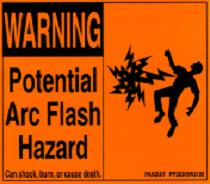
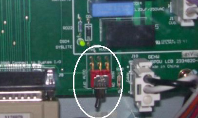

Operating Documentation
Direction 5193574-800, Rev# 22
LightSpeed 7.X Service Methods
Module Version 3.0, Version Date 5/17/10
Operating Documentation |
| NOTE: | For a full size version of this illustration, click on the pdf icon below |
Media File 1: Full Size Illustration: NGPDU Front & Rear (exposed view)

Illustration 1: NGPDU Front & Rear (exposed view)

The PDU must be de-energized prior to performing work on it. More than 100 Kilowatts of power exists in the PDU at various periods of time. Therefore, consider all points in the PDU as hazardous.
Service Exceptions: The PDU contains voltages above 240 Volts. Read and heed Warning prior to performing live circuit Volt measurements.
Illustration 2: Arc Flash Hazard

| ||||
| Hazard Level 2 | ||||
| Arc flash | ||||
| when performing live circuit volt measurements all precautions
must be followed to avoid death or injury. Individuals must have current training in LOTO, Arc Flash, and electrical safety. It is mandatory to wear the proper Personal Protective Equipment as outlined in this training. Ensure all secondary protective covers on the PDU are fully installed BEFORE the PDU is energized. Illustration 3: PPE Warning
|
Axial drive power for gantry rotation (AC)
High voltage DC for X-ray generation (floating DC)
Distributed console, table and gantry power (AC)
A small power lamp is visible on the front cover. When illuminated, this lamp indicates power is present within the PDU. See Illustration 4.
Illustration 4: PDU Power Lamp

The service outlet is protected by a circuit breaker. The outlet is located on the Terminal panel. See Illustration 1.
CIRCUIT BREAKERS
There are three (3) groups of circuit breakers in the PDU used to protect various parts of the system. See Illustration 5.
CB2 - Circuit Protection (Axial Drive).
CB3 - Full Winding Protection.
CB4 - CT Gantry Service Outlets.
CB5 - CT Gantry rotating loads.
CB6 - Table & CT Gantry Stationary Loads
CB7 - Operator Console
CB8 - PET Gantry
CB9 - NGPDU Control Power Supply
Illustration 5: PDU Circuit Breakers

Illustration 6: Switch 2 Manual HVDC (SW2-MNL HVDC)

| ||||
The SW2-MNL HVDC switch is set to the Auto OFF position from
the factory and must always remain in the Auto OFF position.
| ||||
The PDU’s top cover is not hinged. To access the top of the PDU, loosen the top cover front retaining screw, then lift and remove the PDU top cover.